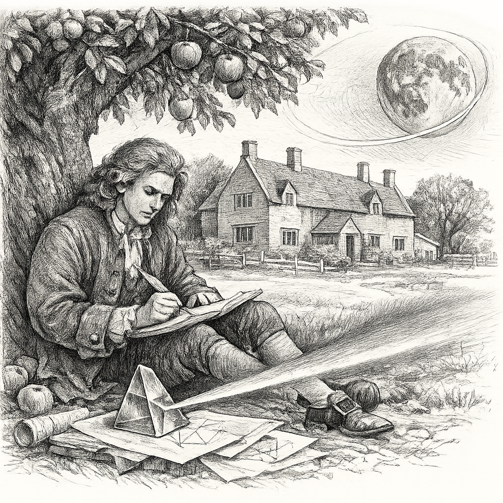
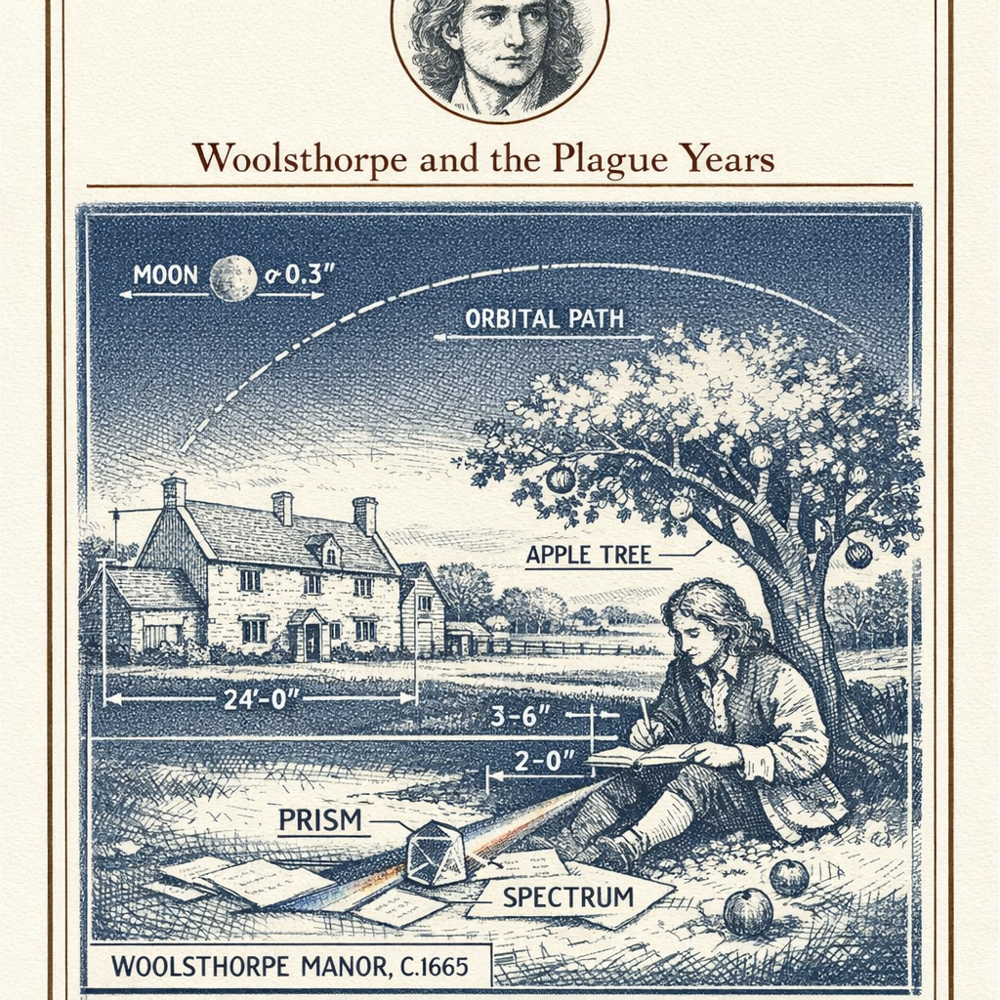
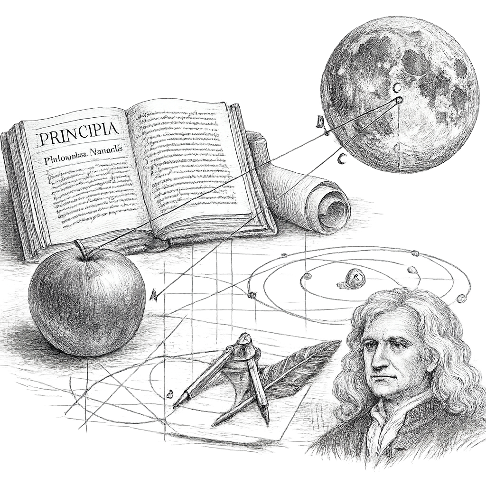
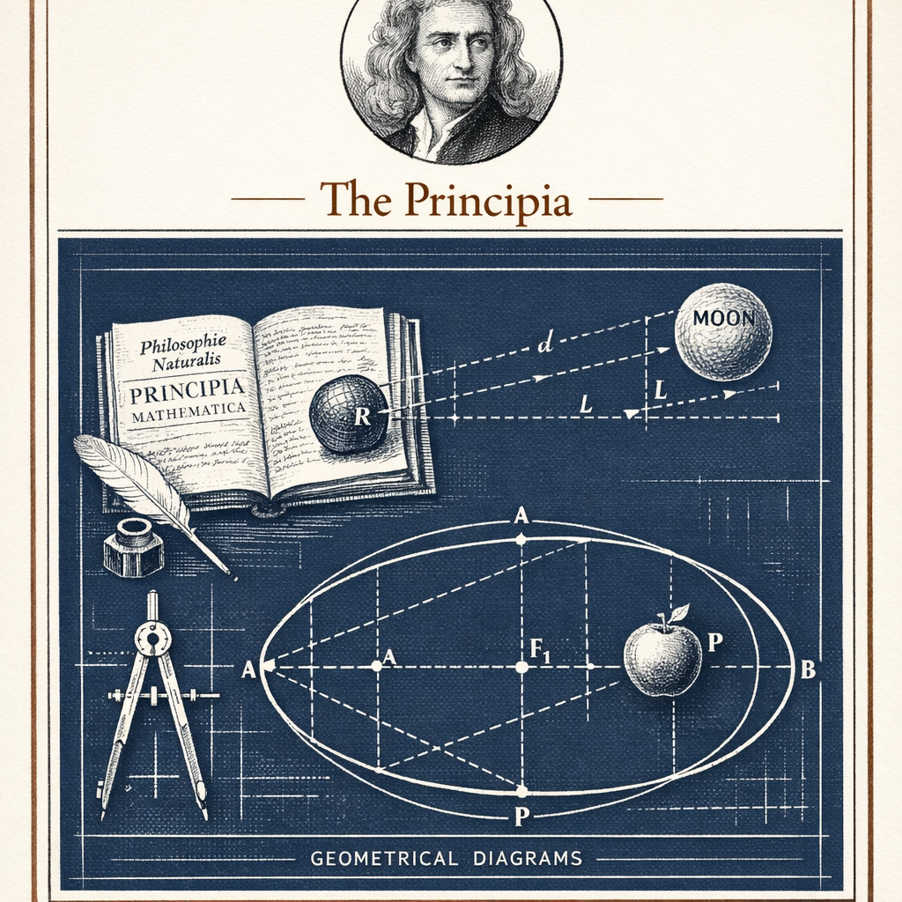
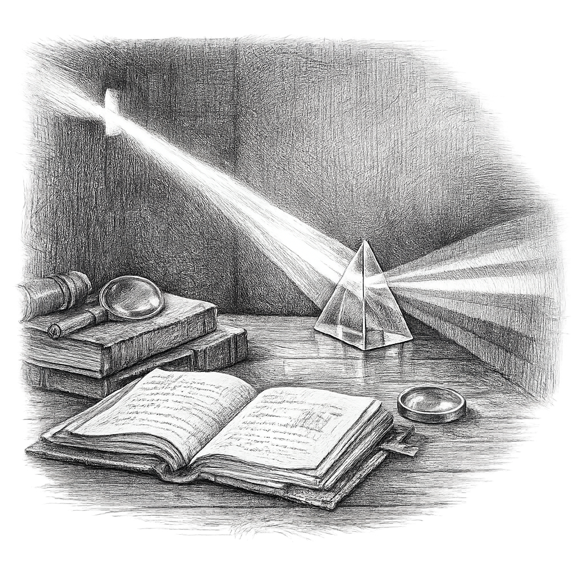
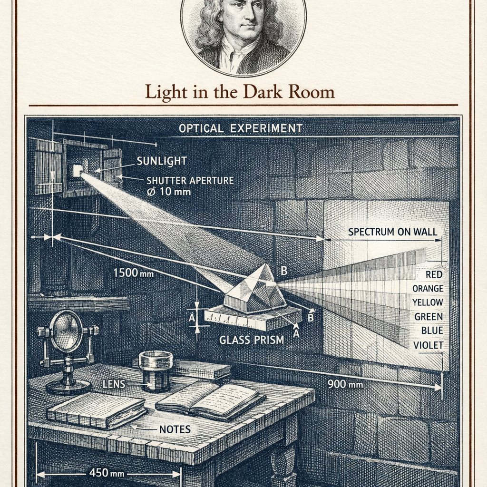
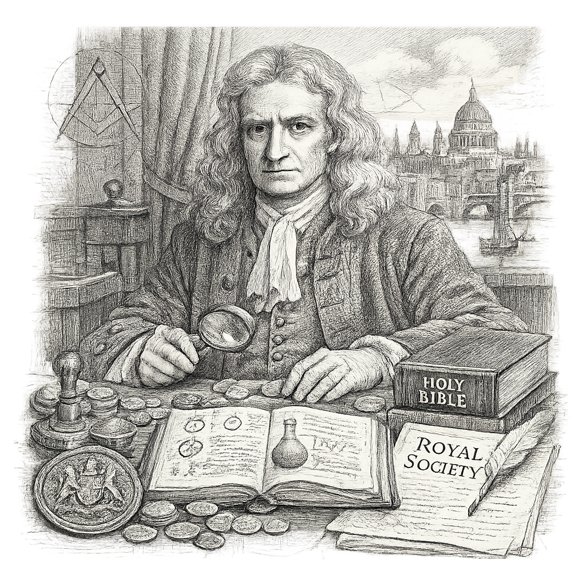
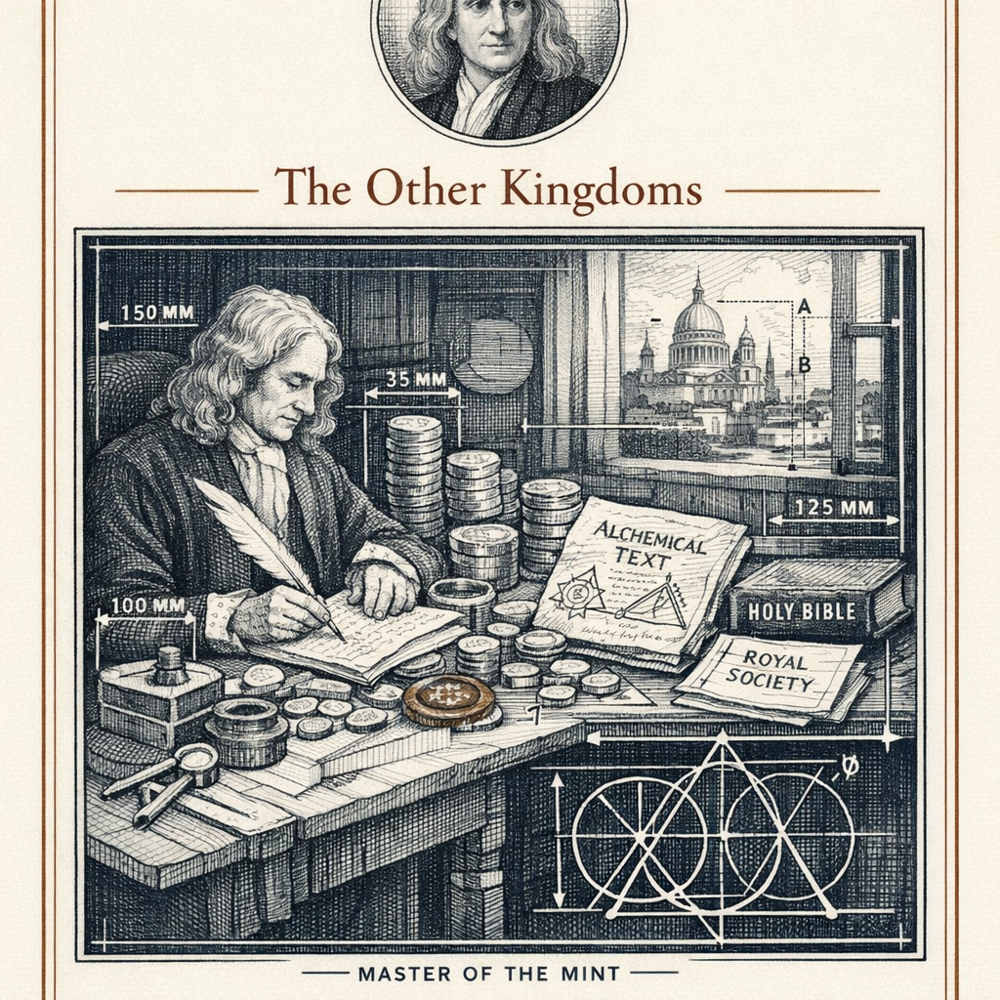

I am born at Woolsthorpe Manor, in Lincolnshire, on the twenty-fifth of December in the year 1642 by the old English reckoning. Some later hand writes it the fourth of January, 1643, by the newer calendar. I let them argue the date. The child does not.
My father is dead before I arrive. My mother marries again and leaves me to my grandmother. I do not forgive this quickly. I keep, for a time, a list of my sins, and among them I set down that I threatened to burn the house over my mother and stepfather, and them in it. I record it. I do not pretend it away.
I go up to Trinity College, Cambridge. I pay my way at first as a subsizar, waiting on wealthier men. I read Descartes and I read Euclid and I keep a notebook of questions under a Latin heading: Quaestiones quaedam philosophicae. Certain philosophical questions. That is the whole of my method, if I have one. I ask, and I do not stop asking until the thing answers.
Then the plague comes, and the university scatters, and I go home.
A falling apple prompts a question; it does not supply an answer.
Those two years at Woolsthorpe are the ground everything else stands on. I invent the method of fluxions — what others will later call the calculus. I break white light apart and find it was never simple. I begin to wonder whether the force that pulls an apple to the earth reaches as far as the moon, and holds it. I am twenty-three. I tell almost no one.
I return to Cambridge. In 1669, at twenty-six, I am made Lucasian Professor of Mathematics. I build a reflecting telescope with my own hands, grinding the mirror myself, because I trust glass I have shaped over glass I have not.
I would have kept most of it private. I dislike disputation; it costs me time I would rather spend at the furnace or the desk. But Edmond Halley comes to me with a question about the orbits of planets, and finds I have already answered it, and will not let me hide the answer. So I write. For eighteen months I write as a man possessed. The Principia is not a bolt from heaven. It is labour. It is argument built stone upon stone.
I publish it in 1687. In it, the fall of a stone and the wheel of the planets become one problem, governed by one law.
Later I set down my optical work in the Opticks, in 1704, in plain English, when many of the men I quarrelled with are dead. I serve at the Royal Mint, first as Warden, then as Master, and I pursue clippers and counterfeiters through the taverns of London with a coldness that surprises even me. I am made President of the Royal Society in 1703. Queen Anne knights me in 1705.
And in the rooms no visitor sees, I read Scripture for its hidden chronology, and I read the alchemists, and I write more words on prophecy and transmutation than on all my mathematics together. I reject the doctrine of the Trinity in private and tell no congregation. I refuse holy orders. I am a devout man and an unorthodox one, and I keep the two facts in the same hand.
If I have seen further, it is by standing on the shoulders of giants. I wrote that in a letter to Hooke, a man I did not love. Read it as generosity or read it as a barb about his stature. I will not settle it for you.
My last long war is with Leibniz, over who first found the calculus. I develop the method years before he publishes his. He publishes first, in his own notation, which is better than mine. I marshal the Royal Society against him and write its supposedly impartial report myself. It is not my finest hour. It is, plainly, mine.
- Philosophiæ Naturalis Principia Mathematica 1687 Three laws of motion and universal gravitation; terrestrial and celestial mechanics unified into a single mathematical system.
- Opticks 1704 The composite nature of white light, the theory of colour, and the behaviour of light through prisms and lenses, written in English.
- Method of Fluxions c. 1665–1671 (published 1736) My formulation of the calculus, developed during the plague years and circulated late.
- The Chronology of Ancient Kingdoms Amended 1728 (posthumous) My revision of ancient history against the astronomical record — the private labour of my later decades.
- Reflecting Telescope 1668 A telescope using a mirror rather than a lens, ground by my own hand, presented to the Royal Society.
Woolsthorpe and the Plague Years


I am no farmer. My mother wishes me to manage the sheep and the estate, and I let them wander into the neighbours' corn while I sit with a book behind a hedge. She is fined for the damage. I count this money well lost.
Home is not comfort. Home is quiet, and quiet is the only tool I truly need. The plague does me a favour it did not intend. With no lectures to attend and no fellows to interrupt, I keep my own hours, which is to say all of them.
People want the apple to strike my head and knock loose a law. It did not. I watched one drop, and I asked why it should fall straight down toward the centre of the earth and not sideways, or up. From why straight down to how far does that pull reach is a long road, and I walked it slowly, and mostly in arithmetic.
The Principia


Halley asks me, in 1684, what curve a planet would trace under a force diminishing as the square of the distance. I tell him at once: an ellipse. He asks how I know. I say I have calculated it. I cannot immediately find the paper. That embarrasses me more than any man will know, and it sets me writing.
I write it in the old geometry, in constructions and proofs, though I found much of it first by fluxions. I do this deliberately. A proof in geometry cannot be waved away as a trick of new symbols. I want it to be unanswerable.
Halley pays for the printing out of his own pocket. The Royal Society has spent its funds on a history of fishes and cannot afford me. I do not forget the debt. When Hooke demands credit for the inverse-square idea, I threaten to suppress the third book entirely. I am not always a large man in these matters. I am precise, and precision and pettiness live close together.
Light in the Dark Room


I darken the room. I let in one thread of sun. I put a prism in its path and the wall wears a band of colour, longer than it is wide, which puzzles me, for if the glass merely coloured the light the shape should be round.
So I take a second prism and pass a single colour through it. It does not change. Red stays red. The prism cannot make from red any other hue. This is my experimentum crucis: the crucial experiment. The colours are not manufactured by the glass. They are already present in the white, and the glass only separates what was mixed.
I hold this quietly for years. When I finally announce it, Hooke and others fall upon it, and I learn to hate the traffic of controversy so thoroughly that I withdraw. I do not publish the Opticks until 1704, after Hooke is dead. Let no one call that an accident of timing.
The Other Kingdoms


Men remember the mathematician and forget the rest. I do not divide myself so tidily. I read the alchemists for the same reason I watch the prism: I believe there is a hidden order in matter, and I mean to find it. I write more on transmutation, and more on the prophecies of Daniel and the true measurements of Solomon's Temple, than on gravity. I do not think this strange. God wrote two books, the world and the Word, and I read both closely.
At the Mint I am no ornament. I recoin the realm. I hunt clippers and forgers through the low houses of London, take depositions, send men to the gallows. I find I have a talent for it that unsettles the gentler part of me not at all.
I preside over the Royal Society and rule it firmly. And still, in the last years, I burn certain papers, and leave a great heap of theology and alchemy unpublished, knowing full well that the age would not thank me for it. Some of me I keep back deliberately. That, too, is a decision, and mine.
I did not resent solitude. I distrusted company. A room in which no one contradicts you is a room in which you may at last hear the world contradict itself.
They ask which of my labours I hold dearest — the orbits or the furnace, the coin or the Scripture. I answer that they never seemed to me different labours.
I am asked, near the end, what I make of it all. I say I do not know what I may appear to the world; but to myself I seem only a boy on the seashore, diverting myself with a smoother pebble or a prettier shell than ordinary, while the great ocean of truth lies all undiscovered before me.
I leave the ocean where it is. I have said what I can say.